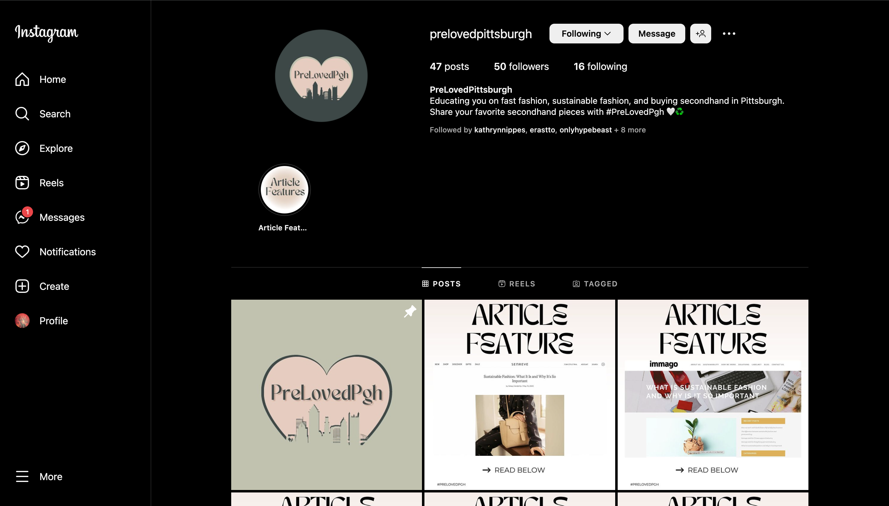
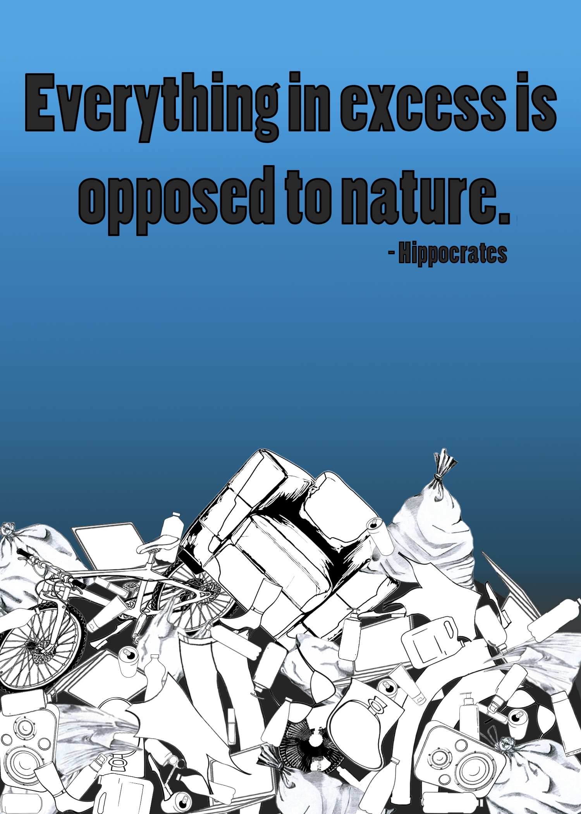
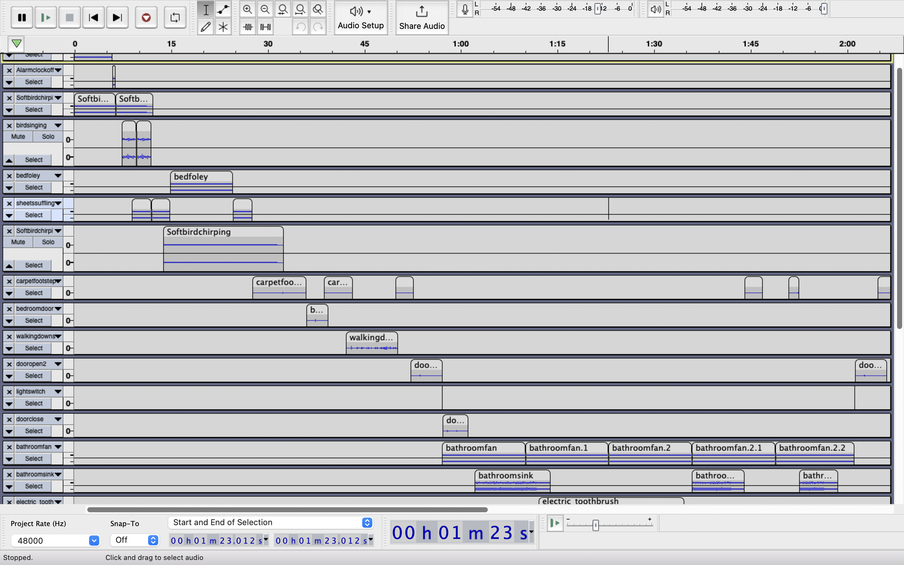
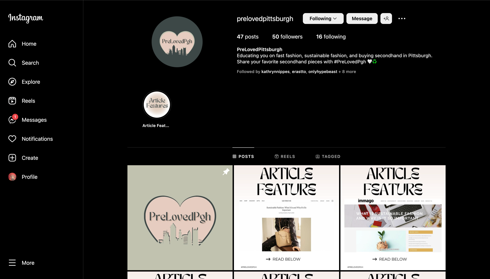
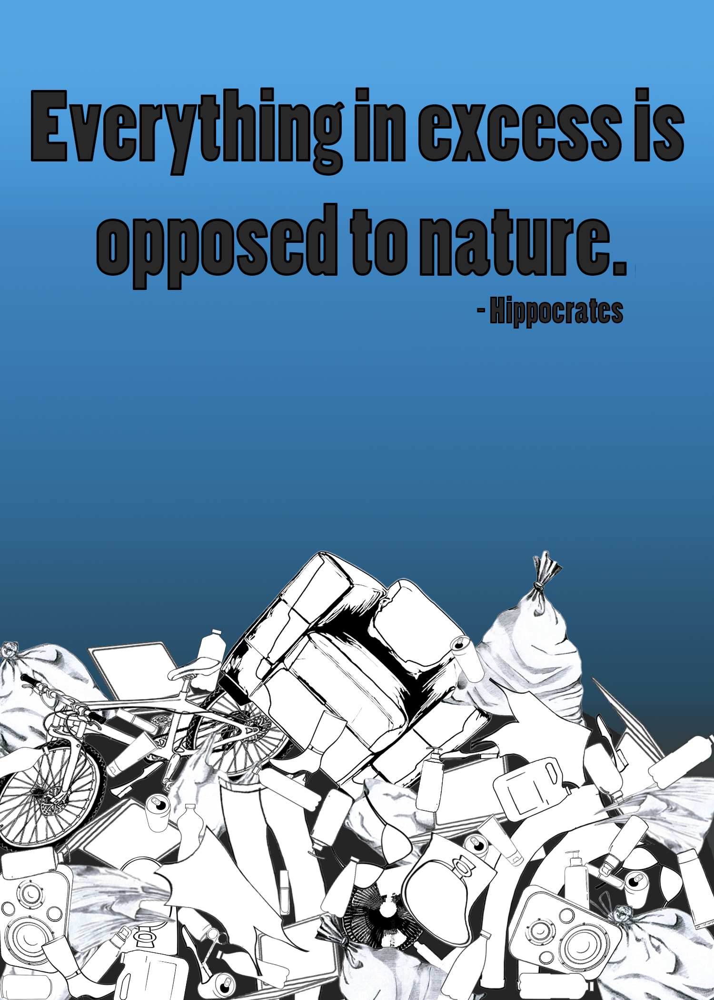
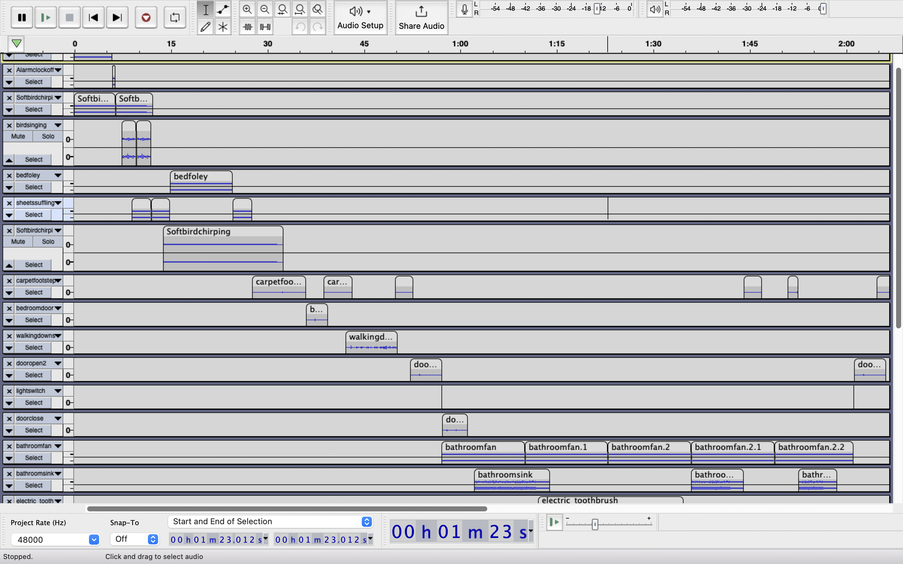
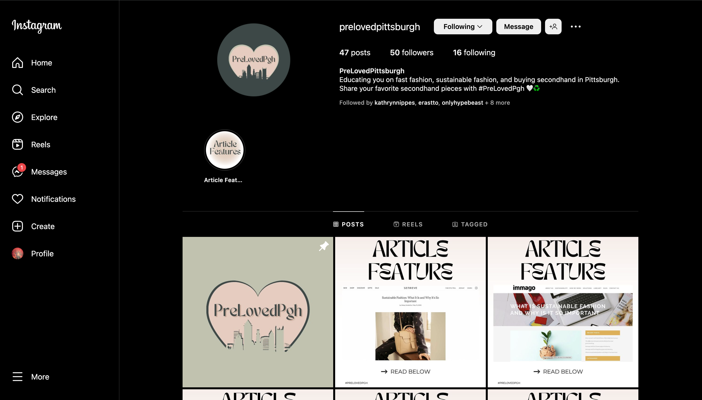
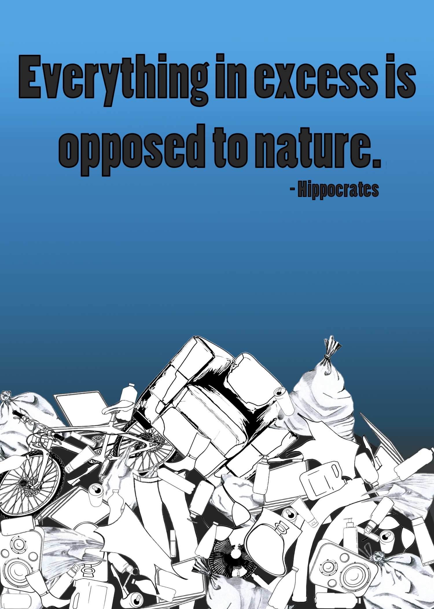
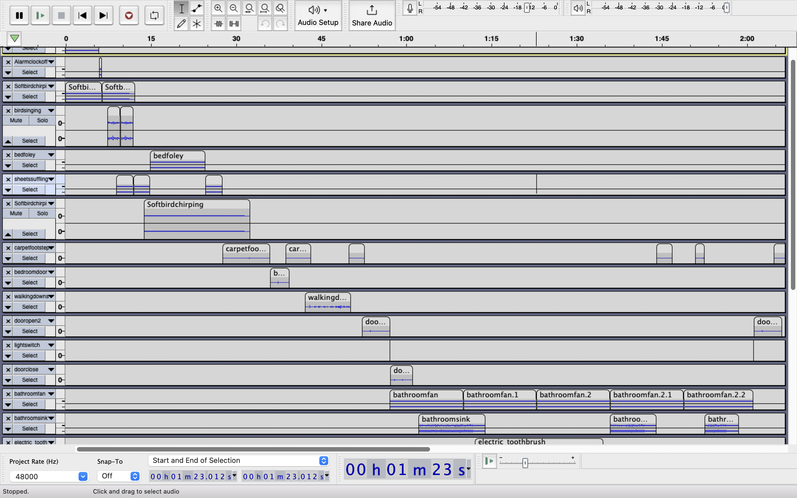

PROJECTS
 





Hi! Welcome to my portfolio website. This is a hub for all of my projects and experience. My name is Skylar Gelnett, and I am currently a student at the University of Pittsburgh. I am a Junior studying Media and Professional Communications on the Digital Media track, I am passionate about exploring the vast and ever-changing landscape of media and communication. Through my coursework, I have developed a strong foundation in various forms of media, including social media, journalism, and advertising, and have honed my skills in writing, research, and critical thinking. I am also constantly seeking opportunities to apply my knowledge and gain hands-on experience in the field. With my strong work ethic, attention to detail, and enthusiasm for learning, I am confident that I have the skills and drive to excel in any media-related role. Through my coursework I have developed many projects that showcase my wide variety of skills.



Through my coursework and personal projects, I have gained a foundational understanding of web development principles and the ability to create and style basic web pages. While I am still developing my skills in this area. I am eager to continue building upon my knowledge and tackling more complex coding challenges in the future.
I have developed a deep understanding of various social media platforms through my personal use. My interest in staying up-to-date with the latest trends has allowed me to identify emerging patterns and anticipate new trends. I am always eager to learn and develop new skills, particularly in social media management and content creation.
I have gained valuable experience in editing and creating graphics for social media through my coursework. I am proficient in using various graphic design tools and software, and have a keen eye for visual aesthetics. Additionally, I have had the opportunity to dabble in audio and video editing, further enhancing my skill set and creativity.